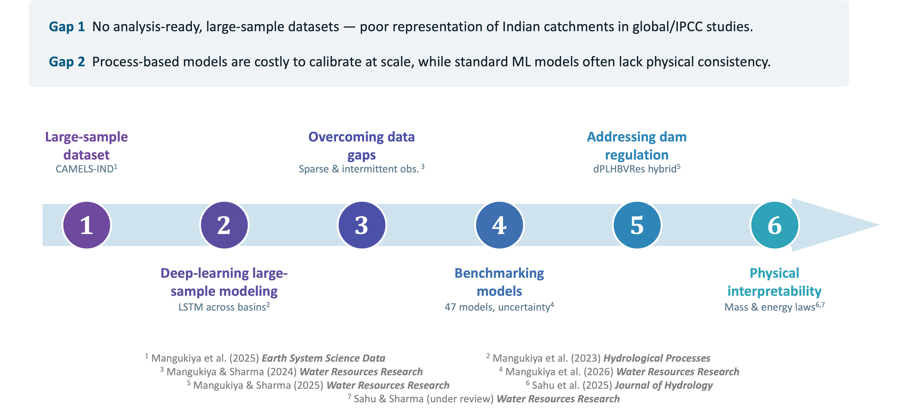

From machine learning to hybrid physics-based + ML models.

India has more than 5,000–6,000 river catchments, yet fewer than one in five carry active streamflow gauges, leaving vast regions unmonitored even though these observations are essential for designing and operating dams, irrigation systems, and other infrastructure. Where gauges exist, records are often short, discontinuous, and rarely available in machine-readable form. Combined with India's exceptional hydroclimatic diversity — arid, semi-arid, tropical, and Himalayan snow-fed regimes — this makes single-catchment studies inadequate for uncovering generalizable rules of hydrological behavior. Large-sample hydrology, which analyses hundreds of basins simultaneously, offers a path to robust and transferable prediction, particularly in ungauged and data-scarce settings.
This work presents an integrated programme that advances large-sample hydrological modelling for India. Its foundation is CAMELS-IND (Catchment Attributes and MEteorology for Large-sample Studies – India), the country's first standardized large-sample dataset, spanning 472 catchments over 1980–2020 with 19 meteorological variables and 211 catchment attributes. Now widely adopted (8,000+ downloads; 25+ publications), it places India on the global CAMELS map and enables reproducible, comparative hydrology.
Building on this dataset, a series of machine-learning and hybrid models progressively strengthen both prediction and process understanding. A large-sample LSTM trained jointly across diverse watersheds outperforms locally calibrated models and generalizes to ungauged basins. A modified LSTM recovers daily streamflow from monthly, weekly, and intermittent observations, offering a practical solution for India's data-sparse network without costly field campaigns. A benchmark of 47 conceptual rainfall-runoff models across 159 watersheds identifies an optimal-complexity shortlist and characterizes structural uncertainty. Finally, hybrid physics-informed approaches — a differentiable model coupling a simplified HBV structure with reservoir operations (dPLHBVRes), and mass- and energy-balance-constrained LSTMs — improve prediction in regulated and human-influenced catchments while simultaneously estimating untrained variables such as evapotranspiration, soil moisture, and reservoir storage.
Across these studies, machine learning contributes on three fronts. For prediction, data-driven and hybrid models deliver skillful streamflow in gauged, ungauged, regulated, and data-sparse basins alike. For understanding, physics-informed architectures align their internal states with real hydrological processes — storage change, soil moisture, and evapotranspiration — moving beyond black-box behavior and improving low-flow and high-flow realism. For transferability, learning across hundreds of catchments at once captures generalizable behavior that supports prediction under data scarcity and change.
CAMELS-IND: hydrometeorological time series and catchment attributes for 472 catchments in Peninsular India.
Earth System Science Data (2025) ↗
Deep learning-based approach for enhancing streamflow prediction in watersheds with aggregated and intermittent observations.
Water Resources Research (2025) ↗
Benchmarking and Selecting Optimal Hydrological Models for Large-Sample Applications Considering Complexity and Uncertainty.
Water Resources Research (2026) ↗
Does MC-LSTM model improve the reliability of streamflow prediction in human-influenced watersheds?
Integrating Reservoir Dynamics into Differentiable Process-Based Hydrological Model for Enhanced Streamflow Estimation.
Water Resources Research (2025) ↗
How to enhance hydrological predictions in hydrologically distinct watersheds of the Indian subcontinent?
Hydrological Processes (2023) ↗
Transferring Hydrologic Data Across Continents – Leveraging Data-Rich Regions to Improve Hydrologic Prediction in Data-Sparse Regions.